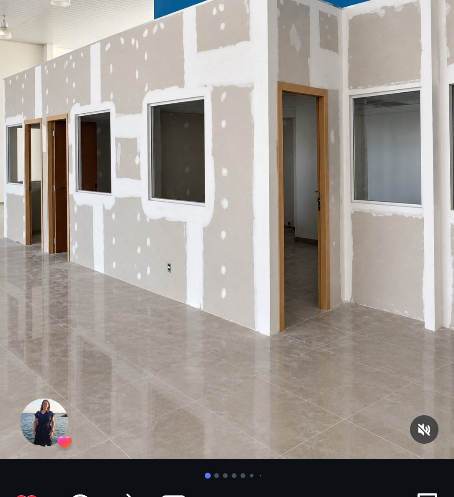

Pladur, Techos Suspendidos y Fosas LED en Valencia: Luz Indirecta y Aislamiento
El pladur técnico transforma estancias oscuras en espacios arquitectónicos contemporáneos. Te explicamos cómo diseñamos techos suspendidos con fosa perimetral de luz indirecta continua, frentes de salón para TV con hornacinas y tabiques acústicos en Valencia.

Las 3 Soluciones Más Solicitadas en Viviendas de Valencia
Falsos Techos con Fosa Perimetral o Candileja LED
Se construye un techo suspendido continuo descolgado unos 12-18 cm del forjado original, dejando una ranura o cortinero perimetral de 10 cm donde se aloja un perfil de aluminio con difusor opalino y tira LED COB de alta densidad. El resultado es un baño de luz cálida indirecta que baña las paredes hacia abajo sin deslumbrar, creando una atmósfera de revista.
Frentes de Salón para TV con Hornacinas Empotradas
Construimos un trasdosado autoportante con perfilería reforzada donde la televisión queda enrasada al milímetro con todos los cables, regletas y tomas ocultos por detrás. Incluimos hornacinas perimetrales iluminadas con repisas para libros, elementos decorativos o chimenea decorativa eléctrica.
Tabiques Acústicos y Aislamiento Antirruido
Si escuchas a los vecinos de al lado o del piso superior, instalamos trasdosados acústicos independientes con banda estanca fonoabsorbente perimetral, perfilería desvinculada del tabique existente, lana mineral de alta densidad y doble placa de yeso laminado de alta densidad fónica.
Qué Placa Elegir para Cada Zona de tu Casa
Placa Estándar (Blanca)
Para salones, pasillos y dormitorios sin requerimientos de humedad ni fuego.
Placa Hidrófuga (Verde)
Tratada con aceites de silicona para baños, aseos y cocinas. Evita la absorción de vapor de agua.
Placa Acústica (Azul)
Mayor densidad y rigidez para aislar dormitorios frente a ruidos aéreos y vibraciones.
Precios Orientativos de Pladur en Valencia (2026)
| Trabajo | Unidad | Precio Estimado |
|---|---|---|
| Techo Continuo Suspendido Pladur (Placa 13 o 15mm) | m² | 22€ - 36€ |
| Fosa Perimetral / Candileja de Luz LED | metro lineal | 16€ - 32€ |
| Tabique Divisorio Doble Placa + Lana de Roca | m² | 28€ - 46€ |
| Frente de Salón TV con Hornacinas | Unidad según diseño | 450€ - 1.250€ |
¿Tienes una idea de techo o pladur para tu vivienda?
Pásanos un croquis o fotos del espacio al 722 851 328 por WhatsApp y te orientamos sobre la mejor estructura y potencia LED necesaria.